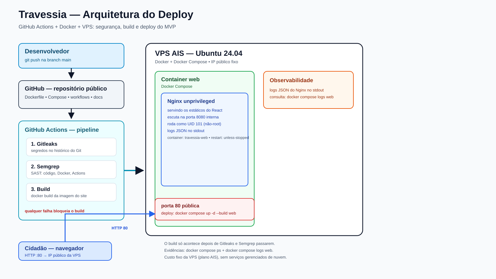
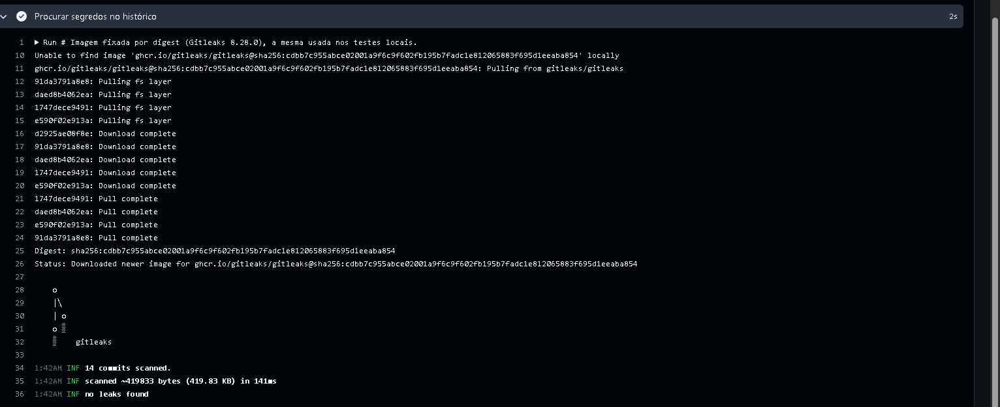
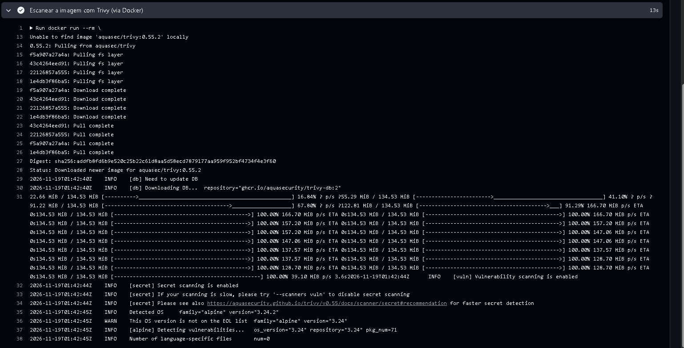
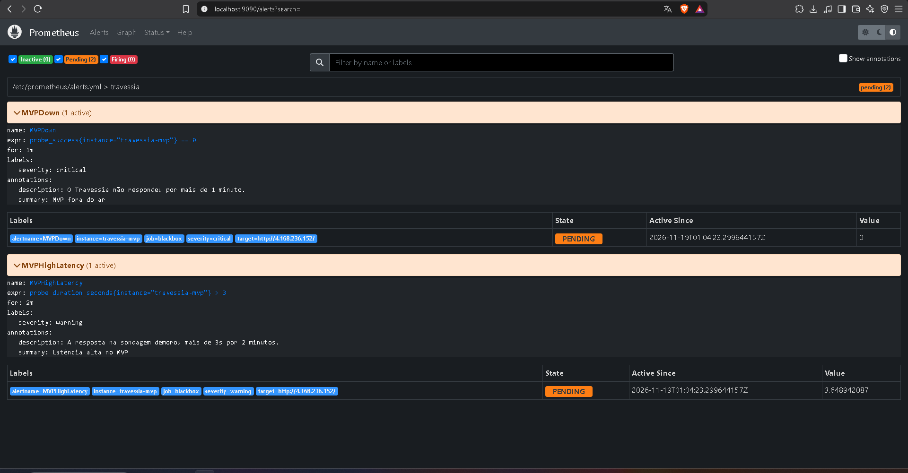
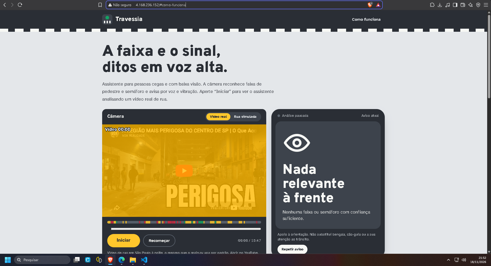
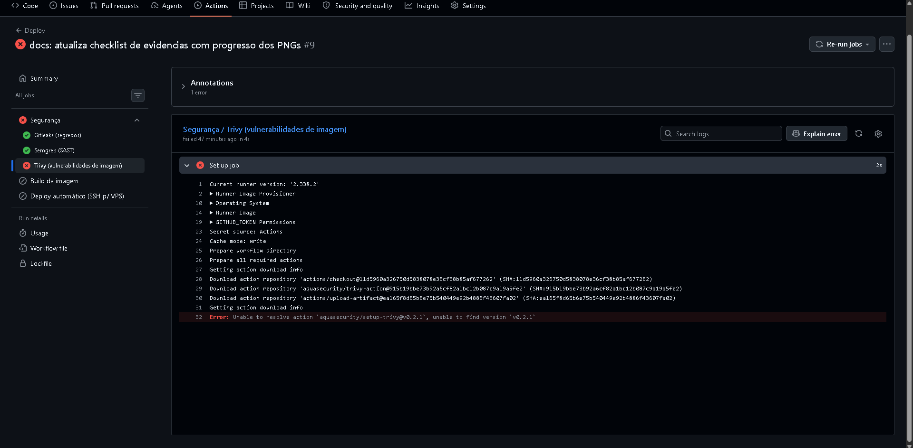
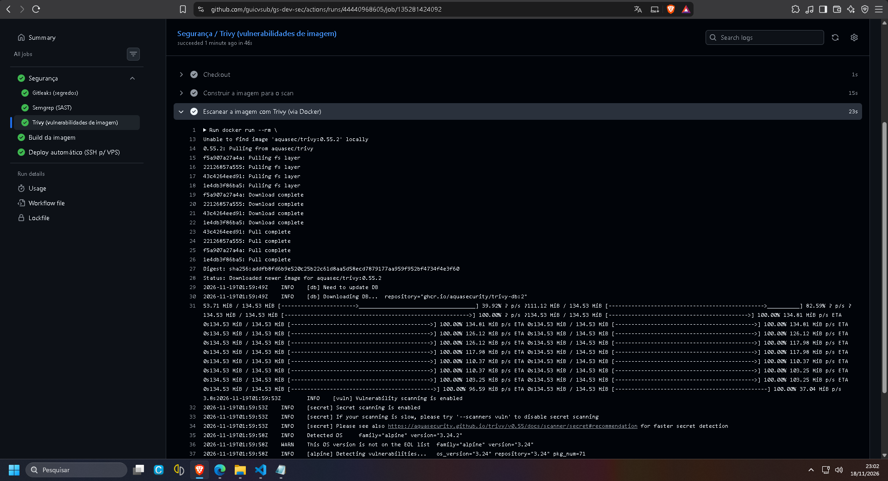

Antes de exportar: confira o nome da equipe, os integrantes/RMs e
salve os prints em docs/prints/ e depois
clique em Imprimir / Salvar PDF.
Abrir README
FIAP • Global Solution 2026.2 • CitizenTech
Deploy em VPS — Travessia
Do commit ao MVP no ar: IaC com Terraform (OpenStack), pipeline DevSecOps
com Gitleaks, Semgrep e Trivy, deploy automático via SSH e observabilidade com Prometheus
+ Grafana (4 métricas de ouro).
Equipe: GS7 (Global Solution 7)
Disciplina: Secure DevOps Tools & Cloud Computing
Integrantes: Guilherme Santiago da Silva (RM552321), Gustavo Govea Soares (RM553842), Pedro Henrique Mello Silva Alves (RM554223), Gabriel Borba (RM553187)
Travessia é o MVP da CitizenTech para apoiar pessoas cegas ou com baixa visão
na travessia de ruas. Uma câmera vestível filma a via; um modelo de visão computacional
reconhece faixa de pedestre, semáforo e veículos; o resultado vira um aviso simples em
tela, voz e vibração.
Para o deploy, o site foi empacotado em Docker e publicado em uma VPS própria
(AIS, Ubuntu 24.04), provisionada por Terraform (OpenStack/IaC). O deploy só
acontece depois que Gitleaks, Semgrep e Trivy passam. A imagem é
construída no pipeline e o container sobe no servidor com deploy automático via SSH
(Docker Compose, Nginx não-root). Prometheus + Grafana locais mostram as
4 métricas de ouro do MVP publicado, com alerta disparado.
Segurança que bloqueia
Gitleaks no histórico, Semgrep (SAST) e Trivy (vulnerabilidades). Falhou, não publica.
IaC com Terraform
VPS criada por código (OpenStack); state e .tfvars fora do repo; porta admin nunca 0.0.0.0/0.
Deploy automático
Push na main → Gitleaks+Semgrep+Trivy → build → SSH → docker compose up → curl 200.
Observabilidade
Prometheus + Grafana locais com as 4 métricas de ouro e alerta disparado.
2.O MVP
Problema
A travessia de ruas é uma das tarefas mais arriscadas para pessoas com deficiência
visual. Semáforos, faixas e veículos mudam rapidamente, e a bengala ou o cão-guia não
informam a cor do semáforo. A informação existe no ambiente, mas não chega de forma
acessível.
Solução
Uma câmera ESP32-CAM vestível captura a cena à frente. O núcleo em Python envia
frames ao modelo do Roboflow (classes pedestrian_crossing,
green_light, red_light e vehicle), aplica regras
de decisão e gera uma mensagem curta, como “Faixa de pedestre e semáforo verde a
frente”.
No MVP, a câmera é substituída por um vídeo público do YouTube, gravado em uma rua de
São Paulo. O site em React mostra o vídeo com as caixas de detecção e o aviso acessível.
A troca do vídeo pela câmera exige mudar apenas a fonte da imagem; a análise e as regras
continuam iguais.
Parte
O que é
Entra no deploy?
frontend/
Site React 19 + Vite 8 + Tailwind 4, com detecções salvas
Sim — MVP público
main.py + utility/
Núcleo Python + OpenCV + Roboflow
Não — opcional
Dockerfile
Build do site + Nginx unprivileged
Sim
Dockerfile.core
Imagem do núcleo Python headless
Opcional, local
3.Arquitetura

Camada
Serviço
Configuração
IaC
Terraform (OpenStack)
Instância, floating IP, security group (só 80 pública)
Aplicação
Container Docker web
Site em React servido pelo Nginx na 8080
Servidor
VPS AIS (Ubuntu 24.04)
Docker + Docker Compose; IP público fixo
Proxy/Web
Nginx unprivileged
Porta 80 externa → 8080 interna
CI/CD
GitHub Actions
Gitleaks, Semgrep, Trivy, build e deploy SSH
Observabilidade
Prometheus + Grafana (locais)
4 métricas de ouro + alerta
Decisões de arquitetura
Site estático em Nginx: o MVP não tem back-end; o build do Vite gera
arquivos estáticos. Menos superfície de ataque.
Nginx unprivileged: o container roda como UID 101, não root.
VPS dedicada (IaC): provisionada por Terraform; IP fixo e custo previsível.
Porta admin restrita: SSH usa CIDR específico (admin_ssh_cidr),
nunca 0.0.0.0/0.
4.Pipeline DevSecOps
push na main
│
├─ security ─┬─ Gitleaks (histórico completo, --redact, exit code 1)
│ ├─ Semgrep (p/default + p/secrets, SARIF)
│ └─ Trivy (imagem: CRITICAL/HIGH bloqueia, SARIF)
│
├─ build ──── docker build da imagem do site
│
└─ deploy ── SSH → VPS → docker compose up -d --build web → curl 200
Etapa
Ferramenta
O que faz
Bloqueia se
1
Gitleaks 8.28
Procura segredos no histórico do Git
Qualquer finding
2
Semgrep
SAST em Python, JS, Dockerfile e workflows
Finding bloqueante
3
Trivy
Scan de vulnerabilidades na imagem
CRITICAL/HIGH (não fixadas)
4
Docker
Build da imagem do site
Falha de build
5
SSH (deploy)
git pull + docker compose up na VPS
Comando remoto falha
6
curl
GET http://IP/ precisa retornar 200
Status ≠ 200
Gate real e deploy automático: o job build depende de
security; o deploy depende de build. Se Gitleaks,
Semgrep ou Trivy falharem, nada é publicado. O deploy ocorre automaticamente via SSH a
cada push na main, com a chave em GitHub Secret.
Pipeline de pull request
O pr.yml roda em PRs para a main: segurança (Gitleaks +
Semgrep + Trivy) e build da imagem, sem publicar nada.
5.Segurança
Gestão de segredos
A chave real do Roboflow fica apenas no .env local (no
.gitignore).
A chave SSH (VPS_SSH_KEY) e o usuário (VPS_USER) ficam em
GitHub Secrets.
O .env.example tem somente o placeholder
sua_chave_do_roboflow_aqui.
Se um segredo entrar no histórico, o Gitleaks falha — rotacione a chave e limpe o
histórico, nunca desative o gate.
Infraestrutura
Controle
Implementação
Porta admin
SSH restrito a admin_ssh_cidr; nunca 0.0.0.0/0
Superfície de rede
Security group só expõe a porta 80 ao público
Estado/IaC
State e .tfvars do Terraform fora do repositório
Container
Nginx unprivileged (UID 101)
CI/CD
Gitleaks + Semgrep + Trivy; actions fixadas por SHA
Limitações de segurança da atividade
O site é HTTP, sem domínio/HTTPS. Evolução: proxy TLS (Caddy com Let's Encrypt).
O endpoint /stub_status é read-only e exposto para o exporter de
métricas; em alto tráfego, restringir ao IP de monitoramento.
6.Observabilidade (Prometheus + Grafana)
As 4 métricas de ouro do MVP publicado são exibidas em Grafana local,
alimentado por Prometheus (a rubrica permite Prometheus/Grafana locais apontando
para o MVP no ar).
Métrica de ouro
Métrica
Fonte
Latência
probe_duration_seconds
blackbox-exporter
Tráfego
rate(nginx_http_requests_total[5m])
nginx-prometheus-exporter
Erros / Disponibilidade
probe_success
blackbox-exporter
Saturação
nginx_connections_active
nginx-prometheus-exporter
Stack em docker-compose.observability.yml (Prometheus, Grafana, blackbox,
nginx-exporter). Dashboard "Travessia - 4 Métricas de Ouro" provisionado
automaticamente.
Alertas
monitoring/alerts.yml: MVPDown (fora do ar por 1 min, CRITICAL) e
MVPHighLatency (latência > 3 s por 2 min, WARNING). Para evidenciar o "alerta
disparado", simule a falha e capture no Prometheus/Grafana.
7.Custos
O custo é o valor fixo da VPS AIS (sem serviços gerenciados de nuvem):
Item
Estimativa/mês
VPS AIS (1–2 vCPU, 2–4 GB RAM)
R$ 40–80
IP público (floating), se cobrado
R$ 0–10
Tráfego de saída (baixa demanda)
R$ 0–5
Total estimado
≈ R$ 45–95/mês
Premissas: valor de referência do plano AIS; confirme o plano vigente.
O núcleo Python opcional consome créditos do Roboflow à parte.
8.Evidências
Os prints abaixo devem ser salvos em docs/prints/ com os nomes indicados.
O checklist detalhado está em EVIDENCIAS.md.
Print 01 — Pipeline completoSalve em docs/prints/01-pipeline.png
Pipeline. Run do workflow Deploy com os jobs security, build e deploy verdes.

Print 02 — GitleaksSalve em docs/prints/02-gitleaks.png
Gitleaks. Step Procurar segredos no histórico com sucesso e a flag --redact.
Print 03 — SemgrepSalve em docs/prints/03-semgrep.png
Semgrep. Resumo com Findings: 0 (0 blocking) e o artefato semgrep-sarif.

Print 04 — TrivySalve em docs/prints/04-trivy.png
Trivy. Scan da imagem com Total: 0 e o artefato trivy-sarif.
Print 05 — Site públicoSalve em docs/prints/05-site.png
MVP no ar. Navegador em http://4.168.236.152, com a URL visível e o vídeo/detecções.
Print 06 — DashboardSalve em docs/prints/06-dashboard.png
Grafana. Dashboard "Travessia - 4 Métricas de Ouro" com latência, tráfego, erros e saturação.

Print 07 — AlertaSalve em docs/prints/07-alerta.png
Alerta.MVPDown/MVPHighLatency em estado firing.

Print 08 — IaCSalve em docs/prints/08-iac.png
Terraform.Apply complete! criando a VPS/security group; SSH restrito (não 0.0.0.0/0).

Print 09 — Execução barradaSalve em docs/prints/09-barrada.png
Barrada. Pipeline vermelho: Gitleaks/Semgrep/Trivy apontando o motivo da barreira.

Print 10 — Execução corrigidaSalve em docs/prints/10-corrigida.png
Corrigida. O mesmo ponto que falhou agora passa de verde após a correção.
10.Dados pessoais e LGPD
O MVP reproduz um vídeo público de uma rua de São Paulo, que pode conter
pessoas visíveis e placas de veículos. Tratamento:
Dado
Onde fica
Observação
Imagens/vídeo (pessoas)
Vídeo público do YouTube
Não coletado nem armazenado pela app.
Detecções pré-computadas
frontend/public/dados/deteccoes-video.json
Apenas bounding boxes e classes, sem rostos reconhecíveis.
Dados do usuário final
Nenhum
O site não coleta nome, e-mail, localização nem dado pessoal.
Responsabilidade compartilhada: o provedor (AIS) responde pela
segurança física/infraestrutura da VPS; o cliente (equipe) pela aplicação,
container, credenciais, dados processados e cumprimento da LGPD. A aplicação é
stateless e não persiste dados pessoais.
11.Como reproduzir
Crie o repositório público e envie o código (sem .env e sem
.tfvars).
Provisione a VPS com Terraform (OpenStack): terraform apply.
Configure os secrets (VPS_SSH_KEY, VPS_USER) e variables
(VPS_HOST, VPS_PATH).
Faça push na main: Gitleaks + Semgrep + Trivy, build e deploy
automático via SSH.
Suba o Prometheus + Grafana locais e confirme as 4 métricas e o alerta.
O passo a passo completo, incluindo Terraform, secrets e troubleshooting, está no
DEPLOY.md.
12.Conclusão
O MVP atende aos entregáveis: repositório público com Dockerfile,
workflows e docker-compose.yml; URL pública na VPS; IaC com Terraform
(state e .tfvars fora do repo; porta admin nunca 0.0.0.0/0);
pipeline DevSecOps com build, Gitleaks, Semgrep e Trivy a cada push e deploy
automático via SSH; observabilidade com Prometheus + Grafana e as 4 métricas de
ouro e alerta disparado; documentação com diagrama, responsabilidade compartilhada, LGPD
e custo.
O resultado é um MVP no ar de forma reproduzível, seguro na pipeline e com
observabilidade completa — com custo previsível de uma VPS dedicada.